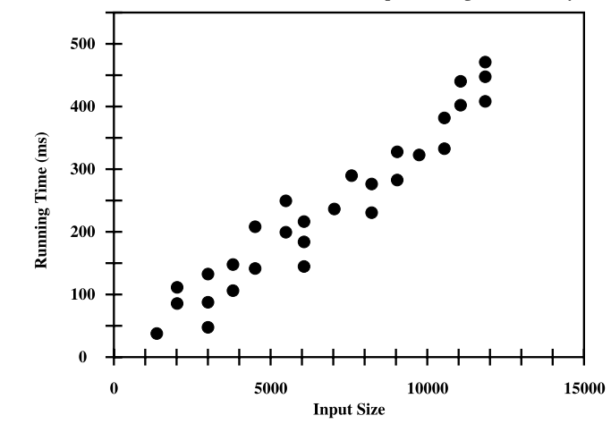
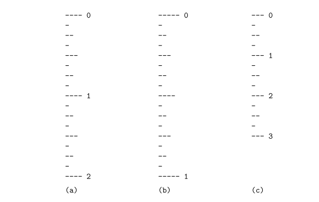
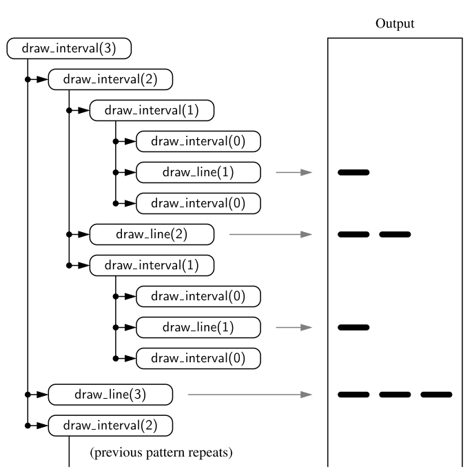

Chapt 3.1. Experimental studies
We are interested in the desgin of "good" data structures and algorithms
Data Structure: a systematic way of organising and accessing data
Algorithm: A step-by-step procedure for performing some task in a finite amount of time.
Experimental studies
- We can study the running time of an algorithm by recording the time spent between each execution
for time import time
start_time = time()
# run the algorithm
end_time = time()
elaqpsed = end time - start_time
- We can use this approach to gather experimental data on the efficiency of Python's list class
- Not the best measure of algorithm efficiency; other background process may yield and unfair test. A fairer metric is the number of CPU cycles that are used by the algorithm
We are interested in the general dependence of running time on the size and structure of the input.
- Perform independent experiments on many different test inputs of various sizes, i.e.

Challenges of experimental analysis:
- Experimental running times of two differing algorithms are difficult to compare unless experiements are performed on the same hardware and software requirements
- Experiments can only be completed on a limited set of inputs
- An algorithm must be fully implemented in order to execute it, to study its running time experimentally.
Goal of experimental analysis:
- Evaluate relative efficiency of algorithms in a way that is independent of the hardware and software envrionment
- Is performed at a high-level description of the algorithm without need for implementation
- Takes into account all possible inputs.
Counting prime operations:
Perform an analysis directly on a high-level description of the algorithm. Define a set of primitive operations such as the following:
- Assigning an identifier to an object
- Determining the object associated with an identifier
- Performing an arithmetic operation (e.g. adding two numbers) A primitive operation corresponds to a low-level instruction with an execution time that is constant.
Henceforth, to capture the growth of an algorithms's running time, we will associate a function
Focus on worst-case input
- characterise the running times in terms of the wrost case, as a function of the input size,
, of the algorithm. - easier than avergae case analysis
Recursion
Begin with the following four example of the use of recursion, providing an python implementation for each:
- The factorial function
- An English rules
- Binary search
- File system for a computer, in which directories can be nested arbitrarily deep within other directories
The factorial function
There is a natural recursive definition for the factorial function. Observe that
Recursive implementation of the Factorial function
def factorial(n):
if n == 1:
return 1
else:
return n * factorial(n-1)
- repetition is provided by the repeated invocations of the function
Drawing the English Rulers
- For each inch, we place a tick with a numeric label. We denote the length of the tick designating a whole inch as the major tick length
- Between marks for whole inches, the rules contains a series of minor ticks, placed at intervals of 1/2 inch, 1/4 inch, etc. 
Although it is possible to draw such a ruler with iteration, the task is considerably easier with iteration
Python Implementation
def draw_line(tick_length, tick_label=''):
"""Draw one line with given tick length (followed by optional label)"""
line = '-' * tick_length
if tick_label:
line += ' ' + tick_label
def draw_interval(center_length):
""" Draw tick length based upon a central tick length."""
if center_length > 0: # stop when length drops to 0
draw_interval(center_length - 1) # recursively draw top ticks
draw_line(center_length) # draw center tick
draw_interval(center_length - 1) # recursively draw bottom ticks
def draw_ruler(num_inches, major length):
"""Draw English ruler with given numbr of inches, major tick length"""
draw_line(major_length, '0') # draw 0 inch line
for j in range(1, 1+num_inches):
draw_interval(major_length - 1) # draw interior tick for inch
draw_line(major_length, str(j)) # draw in j line and label
The execution of the recursive draw_interval function can be visualised using a recursion trace.

Binary search
This algorithm is used to efficiently locate a target value within a sorted sequence of
-
When the standard sequence is unsorted, the standard approach is to use a loop to examine every element, until either finding a target or exhausting a dataset
-
When sorted and indexable, we know that the values stored at indices
are less than or equal to the value at index -> same for values greater than . - The algorithm maintains two parameters, low and high, such that all the candidate entries have index at least low and at most high.
- Initially, low = 0 and high =
- compare the target value with the median candidate
- Initially, low = 0 and high =
- The algorithm maintains two parameters, low and high, such that all the candidate entries have index at least low and at most high.
-
Consider three cases:
- If the target equals data[mid], return the result
- If target < data[mid], recur the first half of the sequence
- If target > data[mid], then recur the second half of the sequence
Whereas a sequential search runs in
""" Return true us target is found in indicated portion of a Python list
The search only considers the portion from data[low] to data[high] inclusive
"""
def binary_search(data, target, low, high):
if low > high:
return False
else:
mid = (low+ high) // 2
if target == data[mid]:
#recur on the portion left of the middle
return binary_search(data, target, low, mid-1)
else:
#recur on the portion right of the middle
return binary search(data, target, mid + 1, high)
File Systems
A file system consists of a top-level directory, and the contents of this directory consists of files and other directories, which in turn contain files and other directories, and so on. The operating system allow directories to be nested arbitrarily deep
- Many common behaviours of an operating system, such as copying a directory or deleting a directory are implemented as recursive algorithms
- The cumulative disk space for an entry can be computed with a simple recursive algorithm
Algorithm DiskUsage(path):
Input: A string designating a path to a file-system entry
Output: The cumulative disk space used by that entry and any nested entries
total = size(path)
if path represents a directory then
for each child stored within directory path do
total = total + DiskUsage(child)
return total
Analysing Recursive Algorithms
For each recursive algorithm, we will account for each operation that is performed based upon the particular Activation of the function that manages the flow of control at the time it is executed
- i.e. only account for the number of operations that are performed within the body of that activation
- Can then account for the overall number of operations that are executed as part of the recursive algorithm
- This can achieved by understanding the recursion trace of each algorithm
Factorial algorithm
- To compute
factorial(n), we see there are a total ofactivations, as the parameter decreases from n in the first call, to , etc. - Therefore, the overall number of operations computing
factorial(n)is
Drawing an English ruler
- Consider how many lines of input are generated by an initial call to
draw_interval(c) - We know that a call to
draw_interval(c)forspawns two calls to draw_interval(c-1)and a single call todraw_line. - For all
, a call to draw_interval(c)results in preciselylines of output - More generally, the number of lines priented by
draw_interval(c)is one more than twice the number generated to calldraw_interval(c-1)
- More generally, the number of lines priented by
Performing a Binary Search
- The running time of a binary search algorithm is proportional to the number of recursive calls performed
- The binary search algorithm runs in
times for a sorted sequence with elements - Initially, the number of candidates is
, after the first call in a binary search, it is at most ; after the second call ; and so on. In general, after the th call in a binary search, the number of candidate entries remaining is at most .
- Initially, the number of candidates is